Previously we saw a brief tutorial of making charts with ggplot2 package. It quickly touched upon the various aspects of making ggplot. Now, this is a complete and full fledged tutorial. I start from scratch and discuss how to construct and customize almost any ggplot. It goes into the principles, steps and nuances of making the plots effective and more visually appealing. So, for practical purposes I hope this tutorial serves well as a bookmark reference that will be useful for your day-to-day plotmaking.
This is part 1 of a three part tutorial on ggplot2, an aesthetically pleasing (and very popular) graphics framework in R. This tutorial is primarily geared towards those having some basic knowledge of the R programming language and want to make complex and nice looking charts with R ggplot.
Part 1: Introduction to Ggplot, covers the basic knowledge about constructing simple ggplots and modifying the components and aesthetics.
Part 2: Customizing the Look and Feel, is about more advanced customization like manipulating legend, annotations, multiplots with faceting and custom layouts
Part 3: Top 50 Ggplot2 Visualizations - The Master List, applies what was learnt in part 1 and 2 to construct other types of ggplots such as bar charts, boxplots etc.
The syntax for constructing ggplots could be puzzling if you are a beginner or work primarily with base graphics. The main difference is that, unlike base graphics, ggplot works with dataframes and not individual vectors. All the data needed to make the plot is typically be contained within the dataframe supplied to the ggplot() itself or can be supplied to respective geoms. More on that later.
The second noticeable feature is that you can keep enhancing the plot by adding more layers (and themes) to an existing plot created using the ggplot() function.
Let’s initialize a basic ggplot based on the midwest dataset.
# Setup
options(scipen=999) # turn off scientific notation like 1e+06
library(ggplot2)
data("midwest", package = "ggplot2") # load the data
# midwest <- read.csv("http://goo.gl/G1K41K") # alt source
# Init Ggplot
ggplot(midwest, aes(x=area, y=poptotal)) # area and poptotal are columns in 'midwest'
A blank ggplot is drawn. Even though the x and y are specified, there are no points or lines in it. This is because, ggplot doesn’t assume that you meant a scatterplot or a line chart to be drawn. I have only told ggplot what dataset to use and what columns should be used for X and Y axis. I haven’t explicitly asked it to draw any points.
Also note that aes() function is used to specify the X and Y axes. That’s because, any information that is part of the source dataframe has to be specified inside the aes() function.
Let’s make a scatterplot on top of the blank ggplot by adding points using a geom layer called geom_point.
library(ggplot2)
ggplot(midwest, aes(x=area, y=poptotal)) + geom_point()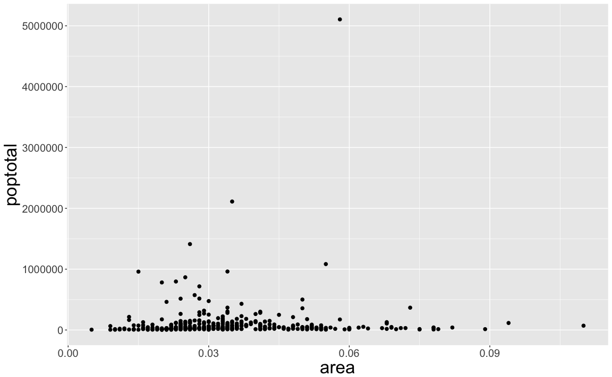
We got a basic scatterplot, where each point represents a county. However, it lacks some basic components such as the plot title, meaningful axis labels etc. Moreover most of the points are concentrated on the bottom portion of the plot, which is not so nice. You will see how to rectify these in upcoming steps.
Like geom_point(), there are many such geom layers which we will see in a subsequent part in this tutorial series. For now, let’s just add a smoothing layer using geom_smooth(method='lm'). Since the method is set as lm (short for linear model), it draws the line of best fit.
library(ggplot2)
g <- ggplot(midwest, aes(x=area, y=poptotal)) + geom_point() + geom_smooth(method="lm") # set se=FALSE to turnoff confidence bands
plot(g)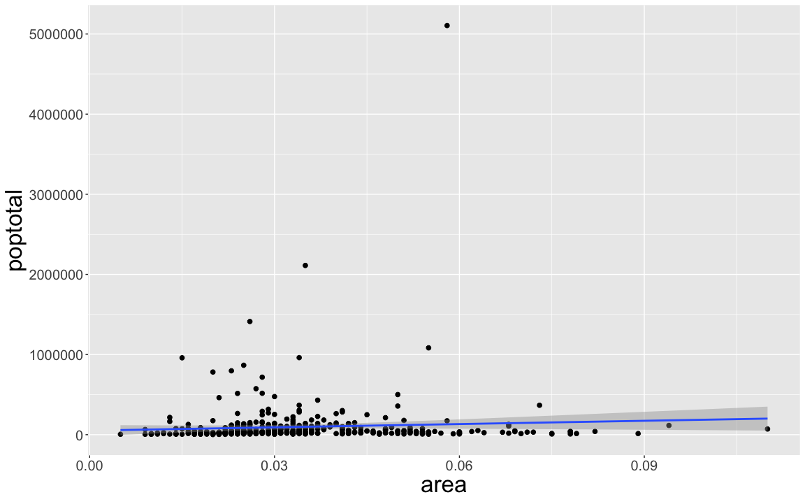
The line of best fit is in blue. Can you find out what other method options are available for geom_smooth? (note: see ?geom_smooth). You might have noticed that majority of points lie in the bottom of the chart which doesn’t really look nice. So, let’s change the Y-axis limits to focus on the lower half.
The X and Y axis limits can be controlled in 2 ways.
This will change the lines of best fit or smoothing lines as compared to the original data.
This can be done by xlim() and ylim(). You can pass a numeric vector of length 2 (with max and min values) or just the max and min values itself.
library(ggplot2)
g <- ggplot(midwest, aes(x=area, y=poptotal)) + geom_point() + geom_smooth(method="lm") # set se=FALSE to turnoff confidence bands
# Delete the points outside the limits
g + xlim(c(0, 0.1)) + ylim(c(0, 1000000)) # deletes points
# g + xlim(0, 0.1) + ylim(0, 1000000) # deletes points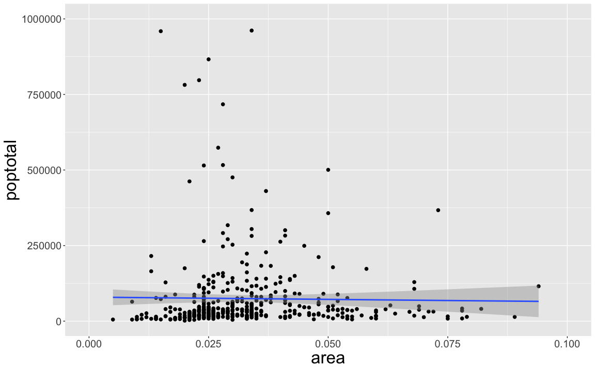
In this case, the chart was not built from scratch but rather was built on top of g. This is because, the previous plot was stored as g, a ggplot object, which when called will reproduce the original plot. Using ggplot, you can add more layers, themes and other settings on top of this plot.
Did you notice that the line of best fit became more horizontal compared to the original plot? This is because, when using xlim() and ylim(), the points outside the specified range are deleted and will not be considered while drawing the line of best fit (using geom_smooth(method='lm')). This feature might come in handy when you wish to know how the line of best fit would change when some extreme values (or outliers) are removed.
The other method is to change the X and Y axis limits by zooming in to the region of interest without deleting the points. This is done using coord_cartesian().
Let’s store this plot as g1.
library(ggplot2)
g <- ggplot(midwest, aes(x=area, y=poptotal)) + geom_point() + geom_smooth(method="lm") # set se=FALSE to turnoff confidence bands
# Zoom in without deleting the points outside the limits.
# As a result, the line of best fit is the same as the original plot.
g1 <- g + coord_cartesian(xlim=c(0,0.1), ylim=c(0, 1000000)) # zooms in
plot(g1)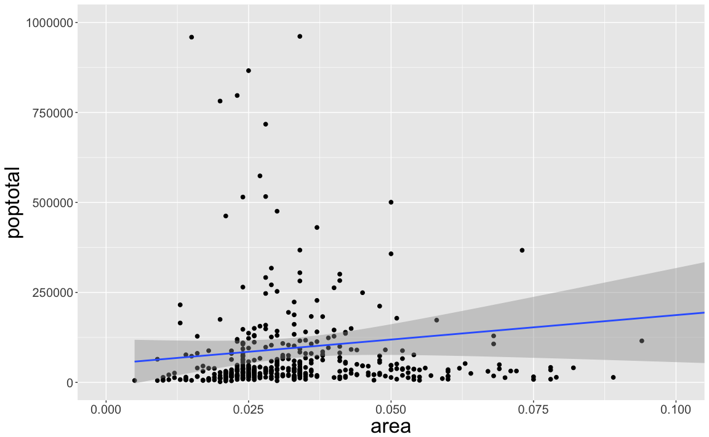
Since all points were considered, the line of best fit did not change.
I have stored this as g1. Let’s add the plot title and labels for X and Y axis. This can be done in one go using the labs() function with title, x and y arguments. Another option is to use the ggtitle(), xlab() and ylab().
library(ggplot2)
g <- ggplot(midwest, aes(x=area, y=poptotal)) + geom_point() + geom_smooth(method="lm") # set se=FALSE to turnoff confidence bands
g1 <- g + coord_cartesian(xlim=c(0,0.1), ylim=c(0, 1000000)) # zooms in
# Add Title and Labels
g1 + labs(title="Area Vs Population", subtitle="From midwest dataset", y="Population", x="Area", caption="Midwest Demographics")
# or
g1 + ggtitle("Area Vs Population", subtitle="From midwest dataset") + xlab("Area") + ylab("Population")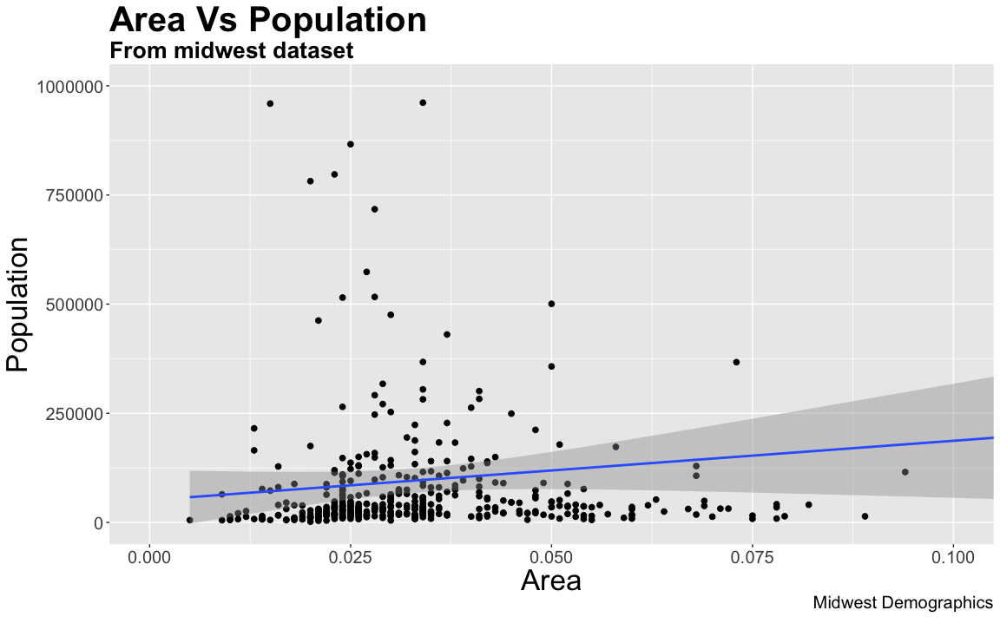
Excellent! So here is the full function call.
# Full Plot call
library(ggplot2)
ggplot(midwest, aes(x=area, y=poptotal)) +
geom_point() +
geom_smooth(method="lm") +
coord_cartesian(xlim=c(0,0.1), ylim=c(0, 1000000)) +
labs(title="Area Vs Population", subtitle="From midwest dataset", y="Population", x="Area", caption="Midwest Demographics")We can change the aesthetics of a geom layer by modifying the respective geoms. Let’s change the color of the points and the line to a static value.
library(ggplot2)
ggplot(midwest, aes(x=area, y=poptotal)) +
geom_point(col="steelblue", size=3) + # Set static color and size for points
geom_smooth(method="lm", col="firebrick") + # change the color of line
coord_cartesian(xlim=c(0, 0.1), ylim=c(0, 1000000)) +
labs(title="Area Vs Population", subtitle="From midwest dataset", y="Population", x="Area", caption="Midwest Demographics")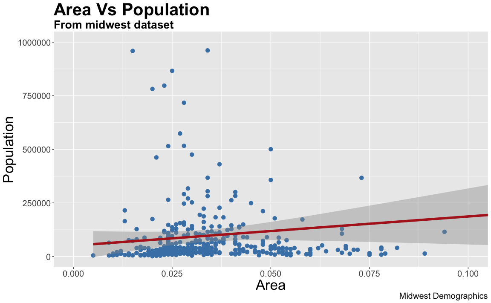
Suppose if we want the color to change based on another column in the source dataset (midwest), it must be specified inside the aes() function.
library(ggplot2)
gg <- ggplot(midwest, aes(x=area, y=poptotal)) +
geom_point(aes(col=state), size=3) + # Set color to vary based on state categories.
geom_smooth(method="lm", col="firebrick", size=2) +
coord_cartesian(xlim=c(0, 0.1), ylim=c(0, 1000000)) +
labs(title="Area Vs Population", subtitle="From midwest dataset", y="Population", x="Area", caption="Midwest Demographics")
plot(gg)Now each point is colored based on the state it belongs because of aes(col=state). Not just color, but size, shape, stroke (thickness of boundary) and fill (fill color) can be used to discriminate groupings.
As an added benefit, the legend is added automatically. If needed, it can be removed by setting the legend.position to None from within a theme() function.
gg + theme(legend.position="None") # remove legendAlso, You can change the color palette entirely.
gg + scale_colour_brewer(palette = "Set1") # change color palette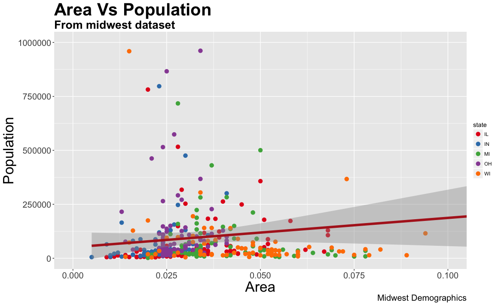
More of such palettes can be found in the RColorBrewer package
library(RColorBrewer)
head(brewer.pal.info, 10) # show 10 palettes
#> maxcolors category colorblind
#> BrBG 11 div TRUE
#> PiYG 11 div TRUE
#> PRGn 11 div TRUE
#> PuOr 11 div TRUE
#> RdBu 11 div TRUE
#> RdGy 11 div FALSE
#> RdYlBu 11 div TRUE
#> RdYlGn 11 div FALSE
#> Spectral 11 div FALSE
#> Accent 8 qual FALSE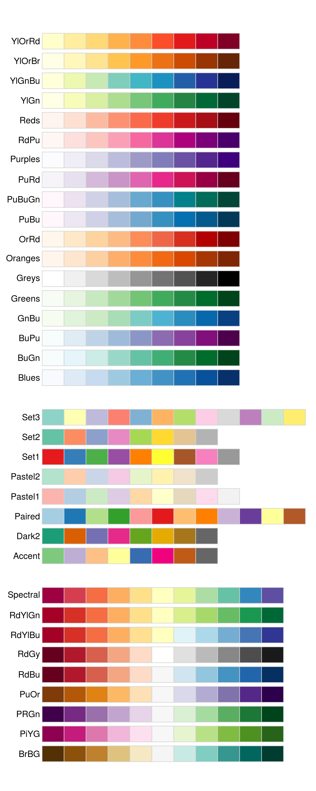
Alright, now let’s see how to change the X and Y axis text and its location. This involves two aspects: breaks and labels.
breaksbreaks should be of the same scale as the X axis variable. Note that I am using scale_x_continuous because, the X axis variable is a continuous variable. Had it been a date variable, scale_x_date could be used. Like scale_x_continuous() an equivalent scale_y_continuous() is available for Y axis.library(ggplot2)
# Base plot
gg <- ggplot(midwest, aes(x=area, y=poptotal)) +
geom_point(aes(col=state), size=3) + # Set color to vary based on state categories.
geom_smooth(method="lm", col="firebrick", size=2) +
coord_cartesian(xlim=c(0, 0.1), ylim=c(0, 1000000)) +
labs(title="Area Vs Population", subtitle="From midwest dataset", y="Population", x="Area", caption="Midwest Demographics")
# Change breaks
gg + scale_x_continuous(breaks=seq(0, 0.1, 0.01))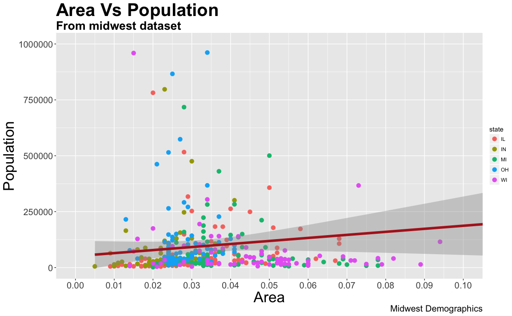
labels You can optionally change the labels at the axis ticks. labels take a vector of the same length as breaks.Let me demonstrate by setting the labels to alphabets from a to k (though there is no meaning to it in this context).
library(ggplots)
# Base Plot
gg <- ggplot(midwest, aes(x=area, y=poptotal)) +
geom_point(aes(col=state), size=3) + # Set color to vary based on state categories.
geom_smooth(method="lm", col="firebrick", size=2) +
coord_cartesian(xlim=c(0, 0.1), ylim=c(0, 1000000)) +
labs(title="Area Vs Population", subtitle="From midwest dataset", y="Population", x="Area", caption="Midwest Demographics")
# Change breaks + label
gg + scale_x_continuous(breaks=seq(0, 0.1, 0.01), labels = letters[1:11])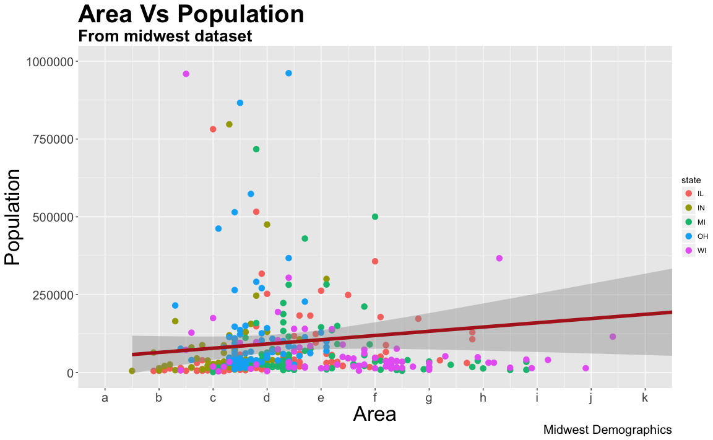
If you need to reverse the scale, use scale_x_reverse().
library(ggplot2)
gg <- ggplot(midwest, aes(x=area, y=poptotal)) +
geom_point(aes(col=state), size=3) + # Set color to vary based on state categories.
geom_smooth(method="lm", col="firebrick", size=2) +
coord_cartesian(xlim=c(0, 0.1), ylim=c(0, 1000000)) +
labs(title="Area Vs Population", subtitle="From midwest dataset", y="Population", x="Area", caption="Midwest Demographics")
# Reverse X Axis Scale
gg + scale_x_reverse()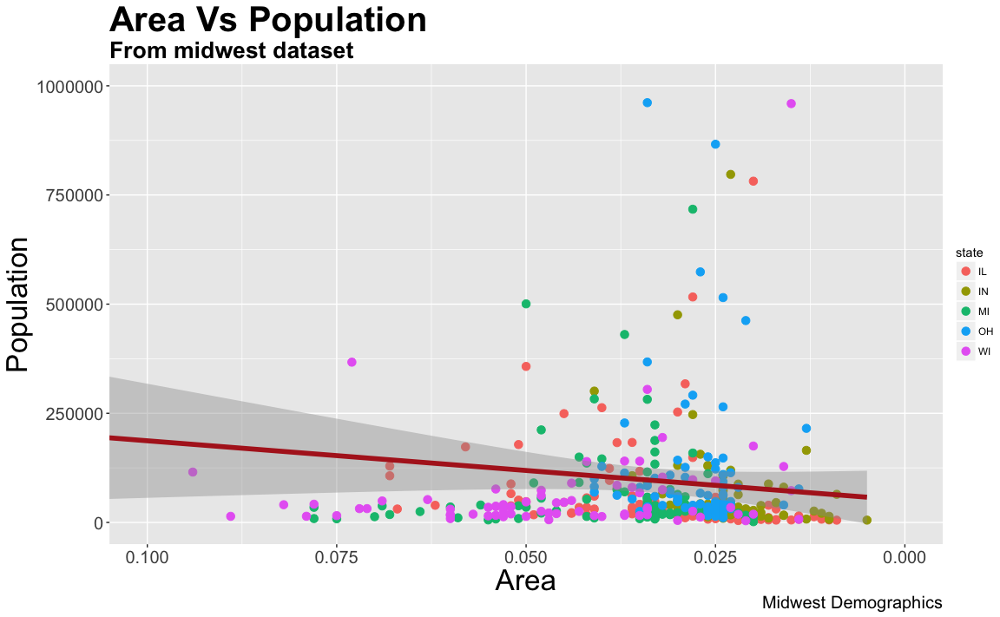
Let’s set the breaks for Y axis text as well and format the X and Y axis labels. I have used 2 methods for formatting labels: * Method 1: Using sprintf(). (Have formatted it as % in below example) * Method 2: Using a custom user defined function. (Formatted 1000’s to 1K scale)
Use whichever method feels convenient.
library(ggplot2)
# Base Plot
gg <- ggplot(midwest, aes(x=area, y=poptotal)) +
geom_point(aes(col=state), size=3) + # Set color to vary based on state categories.
geom_smooth(method="lm", col="firebrick", size=2) +
coord_cartesian(xlim=c(0, 0.1), ylim=c(0, 1000000)) +
labs(title="Area Vs Population", subtitle="From midwest dataset", y="Population", x="Area", caption="Midwest Demographics")
# Change Axis Texts
gg + scale_x_continuous(breaks=seq(0, 0.1, 0.01), labels = sprintf("%1.2f%%", seq(0, 0.1, 0.01))) +
scale_y_continuous(breaks=seq(0, 1000000, 200000), labels = function(x){paste0(x/1000, 'K')})Finally, instead of changing the theme components individually (which I discuss in detail in part 2), we can change the entire theme itself using pre-built themes. The help page ?theme_bw shows all the available built-in themes.
This again is commonly done in couple of ways. * Use the theme_set() to set the theme before drawing the ggplot. Note that this setting will affect all future plots. * Draw the ggplot and then add the overall theme setting (eg. theme_bw())
library(ggplot2)
# Base plot
gg <- ggplot(midwest, aes(x=area, y=poptotal)) +
geom_point(aes(col=state), size=3) + # Set color to vary based on state categories.
geom_smooth(method="lm", col="firebrick", size=2) +
coord_cartesian(xlim=c(0, 0.1), ylim=c(0, 1000000)) +
labs(title="Area Vs Population", subtitle="From midwest dataset", y="Population", x="Area", caption="Midwest Demographics")
gg <- gg + scale_x_continuous(breaks=seq(0, 0.1, 0.01))
# method 1: Using theme_set()
theme_set(theme_classic()) # not run
gg
# method 2: Adding theme Layer itself.
gg + theme_bw() + labs(subtitle="BW Theme")
gg + theme_classic() + labs(subtitle="Classic Theme")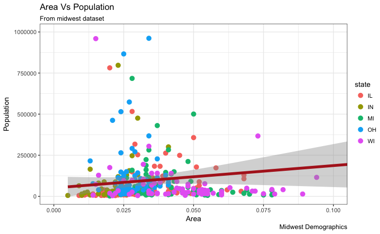 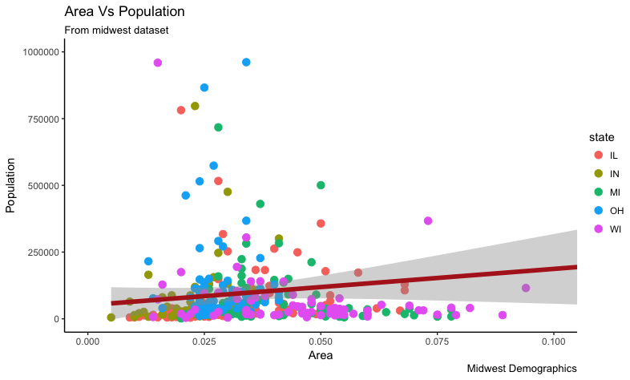
For more customized and fancy themes have a look at the ggthemes package and the ggthemr package.
That’s it for the basics. We are now ably positioned to tackle more advanced customization. In ggplot tutorial part-2, I discuss about advanced customization on modifying theme components, manipulating legend, annotations, faceting and custom layouts.
Have a suggestion or found a bug? Notify here.
Editors Note: The mastering R programming video course has a dedicated section for ggplot2 where the concepts are demonstrated in detail. Additionally it includes solving real coding challenges at the end of every video lesson.